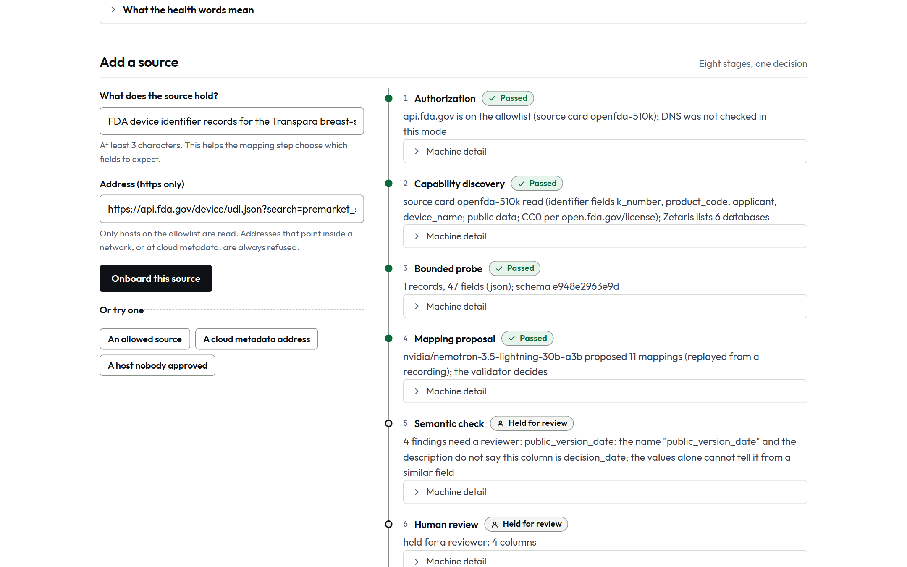
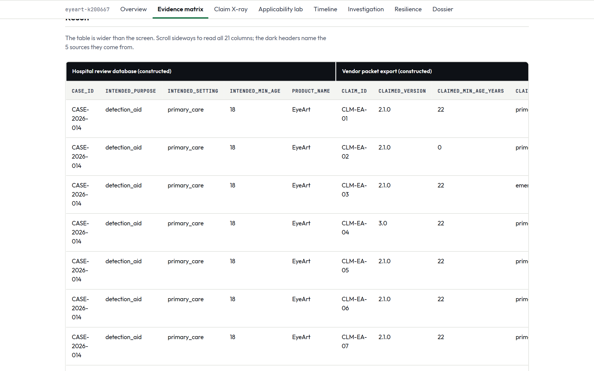
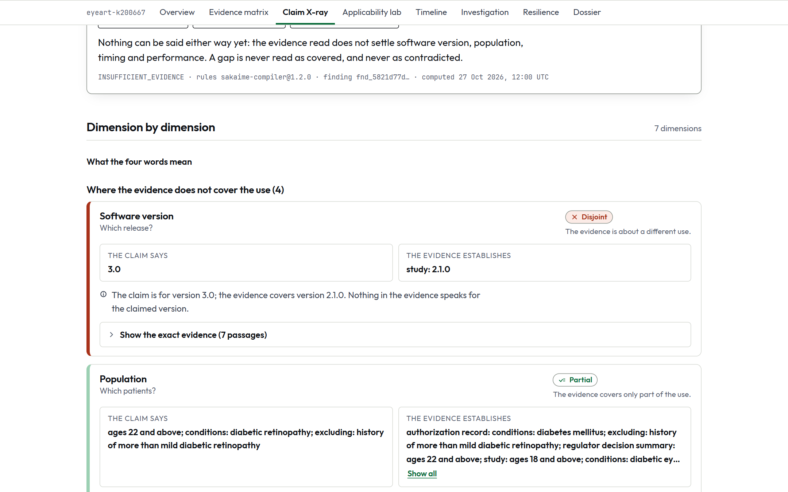
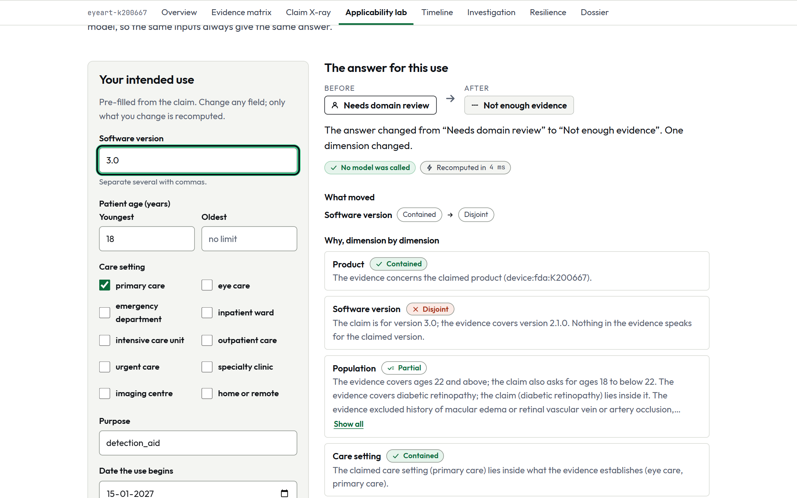
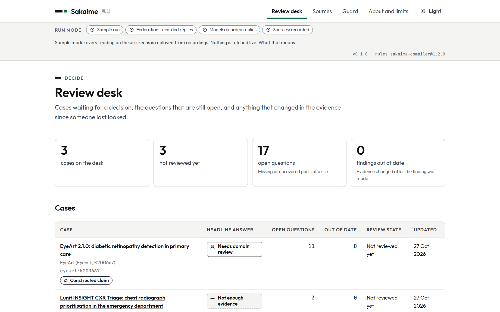
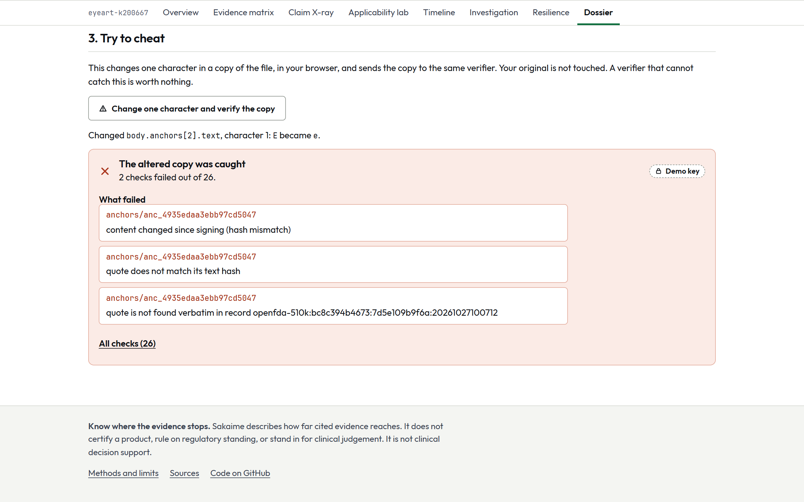

A hospital team asks whether the evidence behind a vendor's AI claim covers the exact version, patients, setting, purpose and date it has in mind. Sakaime finds the sources, joins them, and answers no more broadly than the evidence allows.
Three constructed vendor claims about one cleared product. Each is checked against the same real evidence.
“The 2026 release, version 3.0, is covered by the same clearance and the same pivotal study.”
“In the population of the pivotal study, extended to include adults aged 18 to 21 (adults aged 18 and older with ...”
“Supports prioritisation of diabetic eye disease for patients presenting to the emergency department or admitted to ...”
The same product passes elsewhere: the planned use date, 2027-01-15, lies inside an authorization in force since 2020-08-03. Sakaime reports each part of the use on its own.
Clinical informatics analyst, procurement analyst or quality lead on an AI intake committee. Knows the hospital's own requirements.
No hospital reviewer or buyer has been interviewed. Demand is not verified; nothing here is evidence of it.
Twelve real FDA-listed AI devices, probed keyless on 2026-10-27. A tick means the test holds; a cross means the sources collide or conflict. Links are therefore shown as ranked candidates with a reason, never as fact below an exact identifier.
| Same 26 claims and records | Takes a claim | Verdict | Key re-derivable | Exact label, dev / held-out | Unsupported called supported, dev / held-out |
|---|---|---|---|---|---|
| Constat (free MCP lookup) | No: one K or De Novo number | None | 7 of 26 | n/a | n/a |
| HealthIT.com ledger | No: a filter by product | None | 0 of 26 | n/a | n/a |
| One Nemotron call, all records | Yes | Yes | n/a | 44.9% / 63.3% | 39.2% / 22.2% |
| Tool-using Nemotron agent | Yes | Yes | n/a | 46.2% / 60.0% | 29.4% / 20.0% |
| Sakaime | Yes | One of five labels | n/a | 34.6% / 45.0% | 0.0% / 0.0% |
The competition report scores 18 products and frameworks on five capabilities, these two included. None checks a claim against version, population, setting and intended use: 0 read YES.
The Gate 0 rule says the gap stands, and that is weak: Sakaime's exact-label accuracy is below both generic Nemotron arms, one builder wrote the claims and the key, and Constat and HealthIT.com were not run on the held-out claims.
The hospital states its intended use. Ten vendor claims are checked against the same evidence.
“Can our primary-care clinics use EyeArt 2.1.0 to screen adults with diabetes and no previous diagnosis of more than mild diabetic retinopathy, and does the evidence behind a sensitivity of at least 85 percent apply to that use?”
The guard reads the request, then the planner picks sources from the registered cards.
One federated SQL statement over three kinds of silo. Zetaris runs the join, not our code.
SELECT c.case_id, c.intended_purpose, c.intended_setting, CAST(c.intended_min_age AS INT) AS intended_min_age, s.product_name, vc.claim_id, vc.claimed_version, CAST(vc.claimed_min_age_years AS INT) AS claimed_min_age_years, ...
Query id of the first statement: 2a05328a-7171-48c2-b8c8-8a46bf1c0634. The join answer equals an independent DuckDB run cell by cell on the real engine (gate Z-HEAD).
6 typed links: 4 confirmed, 1 candidate, 1 ambiguous. A score alone never confirms.
175 assertions, each anchored to a page. Code checks the quote exists; a separate check asks whether it supports the claim.
The target population of the EyeArt pivotal clinical trial analysis was asymptomatic persons aged 22 years and older who were diagnosed with diabetes and not diagnosed with more than mild diabetic retinopathy.
Seven dimensions, each contained, partial, disjoint or unknown. Shown for the claim about version 3.0.
A fixed table turns the dimensions into one of five labels, the smallest mismatch and a request.
Version: claimed 3.0, evidence 2.1.0
From the vendor: study results for software version 3.0, or a written change-control statement saying ...
Switch the study source off through the real code and run the case again.
11 findings relied on the lost source and are marked stale. Nothing became supported because something was lost.
The whole run, signed, with a verifier that recomputes every hash and reruns the compiler.
7df8800d3f3adbae...
Change one character and the verifier names the failing item. A signature shows the bundle is unchanged, not that any finding is right.
A model proposal never becomes a fact until a deterministic check or a reviewer accepts it.

A source nobody wrote an adapter for goes through eight stages. Cloud-metadata and unlisted hosts are refused at stage one.
44/44 must-not-register layouts caught

One Zetaris statement joins a hospital database, registry and regulator snapshots and vendor files. Each column names its source.
one statement, 20 rows, equals DuckDB

Typed identity links, authority by kind of assertion, and for each dimension the claimed value beside what the evidence establishes.
0 of 60 false merges
The organizers' own good example: “querying three disconnected systems, reconciling conflicting records, and producing a single sourced summary with the systems each fact came from.”
Seven dimensions, each contained, partial, disjoint or unknown. Unknown is never read as covered and never as false.
0 of 17 dev and 0 of 15 held-out unsupported claims labelled supported
Not a score: the dimensions that stop the claim, both values side by side, and a request written to send to the vendor.
every finding names the passage, page and date
Change the version, ages, setting or date and the label recomputes. No model is called, so the same inputs always give the same answer.
slide 19
A World Model records which facts each finding used. When a source changes, only the dependent findings go stale.
9 findings recomputed instead of 36, none missed (constructed session)
A mapping is checked for units, scale, identifier family and joins against records already held, not only for types.
0 false accepts of a semantic mutation in 52 that could produce one
The same discipline makes the full pipeline conservative: its exact-label accuracy is below the generic Nemotron arms and it flags well-supported claims it cannot place. Slide 30 shows every row.
102 mutated layouts from four base tables, sealed answers, one labeller. The second run follows fixes made against the same cases, so it is no longer held out. Two known limits are reported, not scored.
21 of 21 SSRF drills correct: private, loopback, link-local, metadata, rebinding, redirects, non-https, oversize, unlisted hosts. Refused at stage one with a reason.
Only an exact identifier or a reviewer confirms. A score cannot.
A real ambiguous link from the Transpara case.
20 of 22 ambiguous pairs left ambiguous. 144 pairs, 14 families held out in turn, one reader, a development set.
A study cannot widen what was authorized. A later document is not a stronger one.
Consistency, not clinical validity. Concepts are cited from PROBAST+AI, STARD-AI and others; the executable logic is our inference. 17 of 38 registry rules are implemented, 21 are not, each with a reason.
The evidence covers every part of the use.
It covers a narrower use, which the finding states.
Relevant, adequate evidence points the other way.
A required piece is missing, unreadable or unavailable.
The rule needs clinical judgement the code refuses to make.
The label type is closed. The reporter drops any sentence with banned wording. A request to certify a product safe is blocked by the guard.
Guard on its own corpus: certify-this requests blocked 25 of 34; the rest are sent to clarification. Held-out wording is weaker (slide 28).


axe in light, dark and phone layouts; keyboard-only flows; 360 to 1440 px; 200 percent zoom; copy lint
No moderated session with a real reviewer.
A lost required source never yields a supported label. Only findings that relied on a changed fact go stale. A model that is off, or an order hidden in a document, changes no label.
Real Zetaris API container stopped: the port reported UNAVAILABLE after 4 ms and, with the API up, the same port reports FORBIDDEN, so the two are never confused. The stack answered again 15,335 ms after restart.
Not covered: the Nightshift route and the local lane were not faulted; concurrent users were not tried.
The bundle has not changed since the key holder signed it. It does not show that any finding is clinically correct. A demo key does not identify a signer.

| Sponsor | Organizers ask | What it does here | Code | Evidence | State |
|---|---|---|---|---|---|
| Zetaris | The data layer | One federated SQL over three silo types; four access identities; a Unified Semantic Layer with 7 data-quality rules | src/federation/ src/discovery/ infra/zetaris/ | 9 gates pass; natural-language route blocked | Working; one route not done |
| Meterless | One engine in a working feature | World Model marks dependent findings stale; H-MEM keeps confirmed links; Markovian reads long documents; Scout guards requests | src/engines/ third_party/meterless/ | Sponsor runners: H-MEM 13/13, World Model 8/8, Markovian 8/8 | Working; Scout weak on new wording |
| Nightshift | The primary AI provider | Every recorded model reply came through Nightshift with a signed receipt | src/models/nightshift.ts src/models/stack.ts | 61 of 61 receipts re-verified | Working; live fallback tested on doubles |
| NVIDIA Nemotron | The model the product runs on | Seven roles: Lightning 30B for volume, Ultra 550B for resolver and critic | src/models/roles.ts | output_examples/model-route.json | Working |
| Cursor | Dev environment (optional per moderators) | Not used. Claude Code was the coding assistant | none | README.md, docs/provenance.md | Not used |
| Bright Data | Only for the bounty track | Not applicable: primary track is Track 1 | none | none | Not applicable |
| Gate | Result | What the evidence shows |
|---|---|---|
| Z-HEAD | Pass | One statement over three silos: 20 rows, equal to DuckDB cell by cell |
| Z-REST | Pass | REST table over openFDA and ClinicalTrials.gov equals a direct call |
| Z-POL | Pass, with two defects found | Four identities, four views; no confidential value reached the agent |
| Z-CAT | Pass | Tags, schema drift visible through the catalog |
| Z-AUD | Pass, with limits | Audit log lists 9 of 9 request ids; no SQL text |
| Z-TT | Pass | VERSION AS OF returns the earlier registry state (Iceberg only) |
| Z-USL | Pass | Six-table layer compiled and queried as a read-only identity |
| Z-PDF | Pass | FORMAT PDF text for three FDA summaries |
| Z-NL | Blocked | No natural-language-to-SQL service in the local build; three routes tried |
| Kill drill | Pass | API stopped: UNAVAILABLE in milliseconds; engine restarts alone |
115 SQL statements in the full run. Not run: Linux, macOS, concurrent users, Zetaris Cloud.
Ten tables, 89 columns, queried as a read-only identity. Engineering hours were not measured and no hours-saved figure is claimed.
| Rule | Fails on the recorded stack |
|---|---|
| collection_complete | 0 of 7 fail |
| study_has_eligibility | 143 of 157 fail |
| version_is_listed | 0 of 20 |
| claimed_age_plausible | 0 of 18 |
| claim_cites_authorization | 0 of 18 |
| case_vocabulary_defined | 0 of 7 |
| metric_proportion_bounds | 0 of 75 |
The 143 failures are real: search summaries with no eligibility block. A deliberate truncation, 110 records cut to 39, failed the completeness rule and blocked that collection.
Keeps reviewer-confirmed links, accepted mappings and precedents.
Bi-temporal facts; marks exactly the dependent findings stale.
Reads long documents in bounded chunks with a carried-over ledger.
Guards every request and document-derived instruction; signs export contracts.
| Role | Model | Why |
|---|---|---|
| planner | Lightning 30B | high volume, short structured plans |
| discoverer | Lightning 30B | mapping proposals from a bounded sample; a deterministic validator follows |
| extractor | Lightning 30B | highest volume: one call per document chunk; quote-exists is checked in code |
| support checker | Lightning 30B | semantic-support check in a separate context that sees only the passage and the assertion |
| reporter | Lightning 30B | prose from verified findings only; code rejects sentences without a finding id |
| resolver | Ultra 550B | identity adjudication inside the uncertain band; low volume, high consequence |
| critic | Ultra 550B | tries to break each draft finding; a stronger and different model than the one that drafted it |
Ultra 550B: 29 Lightning 30B: 32
eyeart 14 of 14 · lunit 23 of 23 · transpara 23 of 23
Where a reply was routed and which model answered, not that it is true. It carries no hash of the reply. NVIDIA's own API answers only if Nightshift is unreachable, and then the reply is labelled unreceipted. The comparison arms called Lightning through NVIDIA directly.
21 of 21 SSRF drills correct
A model classifier raises the last row but pushes false blocks over the gate, so it is off (D-030).
17 egress decisions recorded in the EyeArt dossier; in the recorded run nothing left the machine.
Not verified: that a masked value cannot reach a model prompt end to end.
| Suite | Tests | Size | Class | Result |
|---|---|---|---|---|
| DiscoveryShift | unknown schemas and meaning changes | 102 layouts, 4 base tables | consistency, one labeller | first run 39/48 mapped, 44/44 caught |
| IdentityShift | similar devices, one true match | 144 pairs, 14 families | builder-labelled, dev set | 0 of 60 false merges |
| ScopeShift (A) | one dimension changed at a time | 222 cases, 17 families | consistency | 218 of 222 agree |
| ScopeShift (B) | authentic claims, same inputs for all arms | 26 dev + 20 sealed, 12 + 5 devices | builder-labelled | next slide |
| TimeShift | a source changes after a finding | 27 cases, 5 devices | consistency | stale set equals dependent set, 27 of 27 |
| FailureShift | faults through the real ports | 157 drills | consistency | 157 of 157 correct state |
20 claims, 5 devices, sealed by file hash before any system ran: claims a7e06def, key fcd1327e. The extraction layer was not blind to those documents, so this is a second look, not a blind test.
E-001: the Gate 0 key was edited after the builder saw a dry run of the compiler, so all 26 Gate 0 claims count as development. E-005: changes followed the first held-out score.
Exact label: 9 of 26 dev, 9 of 20 held-out. Below both generic arms.
Unsupported called supported: 0 of 17 and 0 of 15. Generic arms 20.0% to 39.2%; keyword and source-by-source baselines 52.9% to 76.5%.
The cost: well-supported claims flagged 9 of 9 dev and 4 of 5 held-out. It does not over-claim; it also under-confirms.
| Component removed | Result | Status |
|---|---|---|
| Compiler off (generic Nemotron arms) | exact 44.9% and 46.2% against 34.6%; they call 39.2% and 29.4% of unsupported claims supported, Sakaime none | measured |
| Compiler on complete hand-written evidence | exact 61.5% (16 of 26); the items encode the key's vocabulary | upper bound |
| Identity layer off | exact 9 of 26 against 9 of 26; effect shown in IdentityShift: false merges 0 of 60 against 23 of 60 | null result |
| Cross-source checks off | 16 of 48 mappable layouts held for lack of corroboration; 4 that must not register registered | measured |
| Model off, in discovery | 34 of 48 mapped; 14 wrong mappings | measured |
| World Model off | 7 stale findings unflagged by definition; 9 recomputed instead of 36 with it | by construction |
| H-MEM off | 22 repeated questions asked; 10 with scoped memory (constructed session) | measured |
| Markovian: one full prompt, or truncated | restriction found 3/4 against 2/4 and 0/4; four documents | measured |
| Scout injection layer off | 105/126 attacks through against 18/126 | measured |
| Critic role; Nightshift receipts; federation off as an accuracy test | no label changed by the critic in the traces; the other two were not run | not measured |
Every external read is replayed from recordings of 2026-10-27. The compiler, identity scorer, verifiers and guard run for real. A question with no recording abstains visibly. A banner on every screen says which mode is on.
A clean-clone run on Windows and Ubuntu. Live mode needs Docker for Zetaris and a model route.
| Component | What is asked | Where | State |
|---|---|---|---|
| Demo video, 1 to 4 minutes | Main workflow, how the agent solves the challenge, key features, Zetaris and Meterless | separate file; follows the screens in this deck | Separate artefact |
| Slide deck | Problem and users, solution, workflow, stack, sponsor use, what was unique, visuals, future work | this document | Here |
| GitHub repository and README | All source, setup, usage, dependencies; Colab links if used | README.md; Apache-2.0; no Colab | Present |
| Sponsor technology explanation | Zetaris, Meterless, Cursor, NVIDIA, what was unique | slides 23 to 27 | Here; no separate text |
| Sample inputs, outputs and traces | What goes in, what comes out, how the agents worked | input_examples/, output_examples/ (traces/*.jsonl) | Present |
| SAMPLE_MODE fallback | Runs if an external service is down | .env.example, recorded cassettes | Present |
| No secrets | .env ignored; .env.example holds placeholders | .gitignore, .env.example | Present |
| Project description (HackOS form) | 150 to 2000 characters: problem, mechanism, results with limits | written for the form, not part of this deck | Outside the deck |
| Pre-existing components declared | Product code and prepared data | README, docs/provenance.md, metadata.json | Declared |
| Cursor as the development environment | Required in the organizers' text; optional per moderators | not used | Not done |
| A test of a clean setup | Run it from scratch before submitting | judge passes in the working tree | Not done |
| Source | Licence |
|---|---|
| Splink (Ministry of Justice) | MIT |
| Docling (IBM) | MIT |
| OpenLineage | Apache-2.0 |
| Airbyte protocol | MIT |
| Trino connector SPI | Apache-2.0 |
| Graphiti | Apache-2.0 |
Plus PROBAST+AI, STARD-AI, TRIPOD+AI, IMDRF N41 and FDA PCCP guidance, as concepts. The executable rules are our inference.
Meterless reference engines and conformance runners, Apache-2.0, commit 0aa7417, file hashes checked by a test.
Design experience only: two sponsor request shapes, rebuilt and tested here. Font files (SIL OFL) copied. No code, copy or screenshots.
openFDA (CC0), ClinicalTrials.gov, PubMed, Europe PMC, FDA summaries: small hashed recordings. Vendor claims, requirements and the hospital database are constructed. No patient data.
Code, tests and documents were written with Claude Code under the owner's direction. Cursor was not used.
Solo build: Prateek (Pratiikpy). Code, tests and documents written with Claude Code under the owner's direction. Cursor not used.
github.com/Pratiikpy/sakaime
README.md start here
evals/RESULTS.md every result
docs/00-INDEX.md design and decisions
docs/provenance.md what was reused
npm run judge re-check offline